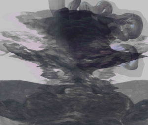
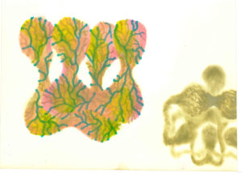
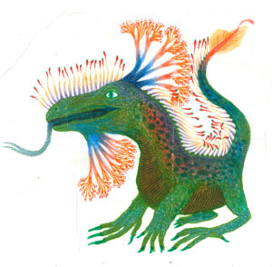

{#20} Di che sogni è fatta la materia

«Da tempo sapevamo che stavamo per liberare un gigante; eppure, quando ci rendemmo conto di averlo fatto davvero non riuscimmo a sottrarci a uno stato d’animo irreale. Ci sentivamo come si sentono, suppongo, tutti quelli che sanno di aver fatto qualcosa che avrà conseguenze imprevedibili.»
Eugene P. Wigner, Symmetries and Reflections (da Piergiorgio Pescali, Capire Fukushima)
Buondì,
stamane avevamo la luna un po’ storta per via di un brutto sogno: le acque contaminate di Fukushima traboccavano dai serbatoi esauriti, e animate da uno spirito radioattivo prendevano la via del mare.
Per fortuna non è così: le acque non si muovono per intenzione propria e lo sversamento previsto avverrà in condizioni garantite e controllate… Però ci è rimasta un’inquietudine, e dopo il caffé per raccapezzarci abbiamo chiesto una riflessione a un amico, che vi proponiamo come primo approfondimento.
Anche la materia più inerte è animata dai sogni e dalle volontà di chi la ha sintetizzata, sperimentata, commercializzata. E poi serve un enorme sforzo comunitario per farla propria, digerirla o al limite espellerla. Allora cosa pensano i materiali che stiamo sperimentando oggi? Come secondo approfondimento vi proponiamo la lettura collettiva di Menti Parallele di Laura Tripaldi, prima tappa in vista della nostra imminente partecipazione a Festivaletteratura. Più sotto trovate le regole del gioco.
Ma prima, come d’abitudine, qualche consiglio sparso di lettura/visione/ascolto.
Immagini antropoceniche postnucleari di Alberto Motolese.

Leggere, guardare, ascoltare
- Piergiorgio Pescali, Capire Fukushima (ed. LEKTON). Sposa precisione scientifica sull’energia dell’atomo e sulla ricostruzione degli eventi a testimonianze personali. «Alle 14.53 del 12 marzo il serbatoio d’acqua di raffreddamento dell’Unità 1 si esaurì. Yohida decise quindi di iniettare acqua di mare prelevata dalle stanze allagate dell’Unità 3. […] Una ventina di minuti dopo Takekuro Ichiro, capo della rappresentanza TEPCO nell’ufficio del primo ministro ordinò al direttore la sospensione delle operazioni, dato che l’acqua di mare iniettata direttamente nel reattore senza essere prima desalinizzata e purificata avrebbe avvelenato irrimediabilmente il reattore rendendolo inutilizzabile. Masao Yoshida decise di contravvenire agli ordini ricevuti […]»
- Antoine Volodine, Terminus Radioso (66thand2nd ). Qui invece le radiazioni nucleari sembrano proprio essere dotate di uno spirito proprio, un tutt’uno con la mente di un inquietante e incestuoso sciamano.
- Un recente seminario dell’Università di Edimburgo ha catturato la nostra attenzione per la risonanza con la parola-chiave che abbiamo scelto per l’imminente edizione di Scienceground 8/5. Se una delle possibili traduzioni in inglese è waste, è stato molto interessante esplorare questo concetto nella sua dimensione spaziale (wasteland) con Vittoria di Palma. Sempre da Edimburgo, condividiamo pratiche di hacking, recupero e riutilizzo di componenti elettroniche, importante fonte d’inquinamento ma spesso trascurata nelle riflessioni sul nostro impatto ambientale.
- Larence Carter, Inside Exxon’s playbook: How America’s biggest oil company continues to oppose action on climate change (Unearthed). Il negazionismo climatico si evolve, come ha spiegato incautamente un lobbysta di Exxon ai giornalisti di Unhearted, il progetto giornalistico di Greenpeace. Il supporto di Exxon a una “carbon tax” è solo una posa: sanno che non può essere realizzata nell’attuale clima politico, ma mantenere la posizione è utile per la propaganda.
- Centro Documentazione Conflitti Ambientali, Follow the green – La narrazione di ENI alla prova dei fatti. «Se si dà un’occhiata, in un giorno qualsiasi, all’homepage del sito di Eni, quasi non c’è traccia di petrolio. […] I messaggi promozionali circa la sostenibilità ambientale e la cura dell’ecosistema da parte del cane a sei zampe, inondano quasi tutte le testate nazionali, facendoci credere che Eni stia davvero cambiando rotta. Ma cosa c’è oltre la patina degli annunci?»
Sullo stesso filone, un rapporto di re:common sui più di cento incontri fra Eni e Cingolani che hanno portato ad aggiungere un miliardo nel PNRR dedicato all’idrogeno fossile - James Dyke, Robert Watson, Wolfgang Knorr,
Climate scientists: concept of net zero is a dangerous trap (The Conversation). «Le attuali politiche intorno allo “zero netto” non conterranno il riscaldamento entro 1.5°C perché non sono mai state pensate per farlo. Erano e sono ancora guidate dal bisogno di proteggere il business as usual, non il clima. Se vogliamo mettere al sicuro la popolazione, allora questo è il momento di tagliare drasticamente e in modo continuo le emissioni. Questa è la cartina da tornasole che deve essere applicata o tutte le politiche climatiche. Il tempo delle illusioni è scaduto.»

La goccia nel vaso di mare
di Stefano Dalla Casa
Non è strano che la notizia dello sversamento delle acque di Fukushima in mare trovi persone preoccupate, incredule o arrabbiate. Purtroppo non è nemmeno strana la malcelata sufficienza con cui si cerca di fare il debunking di questi stati d’animo, fomentati, si dice, dall’ “allarmismo mediatico”.
Riassumendo, conti e banane alla mano, la radioattività che finirà in mare sarebbe la classica, letterale, goccia nel mare. Anche perché la TEPCO, bontà sua, ha filtrato l’acqua contaminata rimuovendo la maggior parte dei radioisotopi. Non succederà nulla, o meglio, è estremamente improbabile che.
È estremamente probabile che i nostri competenti debunker abbiano ragione su questa parte. Ma forse non è solo di questo che si dovrebbe discutere. E nemmeno si dovrebbe lasciare in mano la discussione a chi pensa che il problema del nostro tempo, che alcuni chiamano con grande simpatia “cialtronevo”, sia la solita tempesta perfetta di “analfabestismo scientifico” e “fake news“.
La storia ci può aiutare. A causa di un grave incidente nucleare, dieci anni dopo decidiamo di usare il mare per diluire e per smaltire una conseguenza imprevista della nostra tecnologia sicura e a rischio zero, e che ci salverà anche dalla crisi climatica (o ci avrebbe salvato se fossimo stati più furbi — i tecno-ottimisti devono ancora mettersi d’accordo).
Le metteremo nel mare perché non sappiamo in che altro modo fare. E questo dovrebbe ricordarci che in Italia dovremmo finalmente decidere dove fare il nostro deposito nazionale di rifiuti nucleari, che è un altro problema dello stesso tipo (con la differenza che qui non c’è il destino cinico e baro di mezzo, le scorie sono previste!).
Il rifiuto nucleare è uno scarto che, conti e banane alla mano, si può trascinare per molte generazioni e di cui ogni paese è responsabile, perché grazie al cielo è più difficile da spedire in Africa rispetto ad altre ecoballe, tipo quelle della plastica “riciclabile” che nessuno vuole. Niente economia circolare da sventolare in questo caso, spiacenti. E un razzo per spedirle in orbita, come nei discorsi da bar, non se ne parla. Non ancora, perché il gesù dell’Antropocene che sta risolvendo da solo il global warming con auto di lusso elettriche prodotte intimidendo i sindacati, sicuramente ha una soluzione anche per questo.
Il debunker si ferma a spiegarci che non moriremo mutanti per colpa dell’acqua di Fukushima, ma fare pipì nella piscina non è bello anche se forse non fa male a nessuno, e quei rifiuti “omeopatici” hanno una storia attaccata che deve continuare a essere ricordata. Insomma, quel bimbo che ha fatto pipì dove nuotano tutti, magari prima non si è comportato molto bene, e ha fatto molti altri danni. La goccia di pipì radioattiva fa traboccare il vaso: altro che analfabetismo.
Quanto saranno trascurabili le conseguenze magari ce lo diranno un giorno i radioecologi, e magari speriamo che in quel futuro ne leggeremo su giornali e riviste moribonde, mantenute in stato vegetativo dalle pubblicità della strategia di greenwashing di Eni, e non certo dai lettori.

Di che materiale sono fatti i sogni (e gli altri pensieri)?
Abbiamo inaugurato la stagione delle Libere Letture 2021 rischiando di perderci nel labirinto delle scienze dei materiali di Laura Tripaldi… meno male che avevamo quattro fili d’Arianna! Troverete nel post dedicato la presentazione dei quattro percorsi di lettura che vi proponiamo per Menti Parallele, il “saggio pop” che spazia dall’archeologia dei materiali agli studi (trans)femministi, alla divulgazione scientifica sulle ultime novità nanotecnologiche. Vi aspettiamo nei commenti sul blog e nel gruppo telegram dedicato!

«An aggressor in possession of the effective minimum number of atomic bombs for a surprise attack could probably place a sufficient number of his bombs on the chosen targets to cause hideous damage. […] But for me to say that the retaliation capabilities of the United States are so great that such an aggressor’s land would be laid waste, all this, while fact, is not the true expression of the purpose and the hopes of the United States.»
Dwight D. Eisenhower, Atoms for Peace
E con questo inno alla pace nucleare un grande saluto, sempre vostrə,